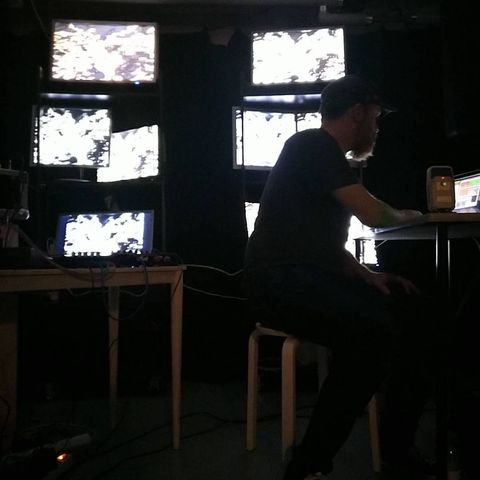
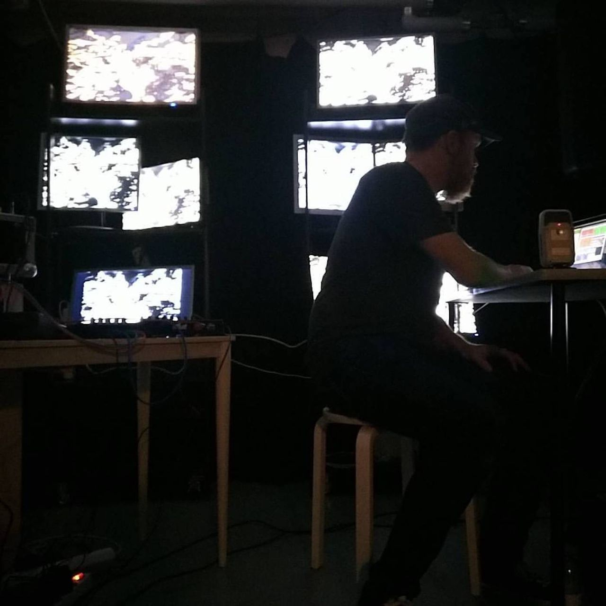

Faircamp
Ruby Louise Rose
›
Sketches for Aural Ataraxia
›
First Sketch for Aural Ataraxia


First Sketch for Aural Ataraxia
A Companion of Owls
Play
01
Play
01
First Sketch for Aural Ataraxia
7:39
Pause
Play
Loading
Copy link
Copy link
Copy link
Failed
Copied